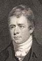
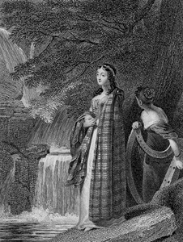

Illustrating ScottCredits & Acknowledgements
Funding for the "Illustrating Scott" database was provided by the British Academy's award of a Small Research Grant of £7500 to support the project from 1 September 2008 to 31 August 2009. The main bulk of this money has been used to finance the work of Ruth M. McAdams as Research Associate for the project. Other parts of the grant have supported travel to other institutions and web development for the project.
The project has also benefited greatly from support, both institutionally and on an individual basis, from the University of Edinburgh. Thanks are due to the School of Literature, Languages & Cultures, and more particularly the English Literature section, where Peter Garside held the position of Professor of Bibliography and Textual Studies. The project also found a valuable base in the Centre for the History of the Book at Edinburgh, and is indebted to its Director, Dr Bill Bell for support and guidance.
In terms of resources, invaluable help has been provided by Edinburgh University Library, and especially the Corson Collection held at the Library's Centre for Research Collections. The result of the ex-librarian James C. Corson's life-long obsession with all things Scott-related, the Corson Collection is a vast repository of a variety of materials, including collected editions, other books containing illustrations, and individual prints. From the beginning, the project has benefited from the detailed information and advice provided by Dr Paul Barnaby (one of the project's co-invigilators, along with Dr Bell), who has an unrivalled knowledge of the materials in the Corson Collection, and maintains the Walter Scott Digital Archive. Those directly related to the project have also gained considerably from the general support provided by Dr Andrew Grout, also of the Library, who took an interest in the project's development from the beginning, and has helped steer policy at several crucial points.
While Edinburgh University Library served as the first-choice repository when selecting source works and cataloguing their illustrations, other libraries and their staffs have made an essential contribution, usually when the Corson Collection lacked a copy or held one that was imperfect. Holdings at the National Library of Scotland have provided the second-largest number of entries, and the compilers are grateful to the staff there for their unfailing assistance, and to the Trustees of the Library for permission to cite material in their care.
Special thanks are also due to Professor David Hewitt and Dr Alison Lumsden for facilitating a visit to the Bernard C. Lloyd Scott collection at Aberdeen University Library, where the compilers met with friendly and efficient support from the staff at Special Libraries and Archives. Other libraries that have provided materials and support include the British Library, the Bodleian Library, Oxford, the New York Public Library, and the National Art Library, Victoria and Albert Museum.
Thanks are also due to Dr Richard Hill of the University of Hawaii, who provided his own catalogue of Scott illustrations, a document that allowed the compilers to double-check their own work, to Richard Jackson, who provided books from his own collection, and to Professor David Skilton of Cardiff University, who allowed access to a digital record of the illustrations in the Magnum Opus edition as a working aid.
Finally, the compilers would like to thank those who offered vital help in developing the database, inputting the materials it contains, and advising on the structure and appearance of the web design. Thanks are also due to Christina Hussell and Dr Anthony Mandal, who offered crucial technical help in the earlier stage when the records were held in a Microsoft Access Database. Finally, the compilers would like to thank Colin Watt, Information Systems Manager, and Greig Christie, Information Systems Developer, Library and Collections, University of Edinburgh, for making the database fully searchable online.

'Flora in the Glen of Glennaquoich', engraved by Charles Heath after Charles Robert Leslie. From: The Waverley Album (London: C. Heath, 1832)